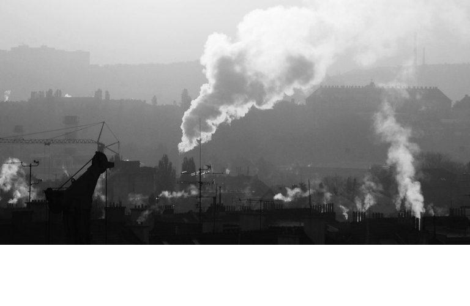
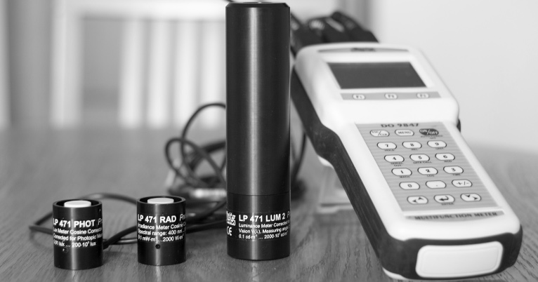

Znalecká činnost
Expertní poradenství v oborech chemie, čistota ovzduší a vodní hospodářství pro soudní řízení

Autorizované odborné studie
Odborné posudky, rozptylové a hlukové studie, oznámení EIA, integrovaná povolení provozu, ověřování emisí skleníkových plynů, hlášení ISPOP, IRZ a další ekologické služby...

Akreditovaná měření
Emisí, hluku, osvětlení, vibrací, prašnosti, mikroklimatických podmínek, fyzikálně-chemickýcké analýzy a vzorkování v oblasti ovzduší, stanovení těžkých kovů

Servis a prodej
Kvalitních měřících přístrojů společností Delta Ohm, S.l.r., PCF Elettronica, S.l.r..
Školení
Nakládání s chemickými látkami a přípravky (BOZP), chemického zákona a zákona o ochraně ovzduší pro podniky